Overview
Wonderful Weddings (WW) is a stress-free, stunning, and sustainable wedding service that saves couples time, money, and effort. WW offers trusted and eco-friendly third-party vendors at transparent price points as well as an integrated cash registry for guests to contribute to whatever custom funds the couple would like to add.
Problem Statement
How might we convince couples that an emerging eco-friendly, budget-conscious, & stress-free wedding service is possible?
Project Proposal and Executive Summary
To start off, we refined the project proposal and wrote an executive summary about the problem and solution, as well as the market opportunity, competitive advantage, and business model.
[INSERT IMAGES OF DOC HERE]
Mind Map
In order to visually represent the project's scope and direction, my team created a mind map with branches representing anticipated or intended audiences for the project with potential mediums that would be appropriate for the message and audience. We used this mind map to identify at least three research areas and key questions to be asked and answered in the project.
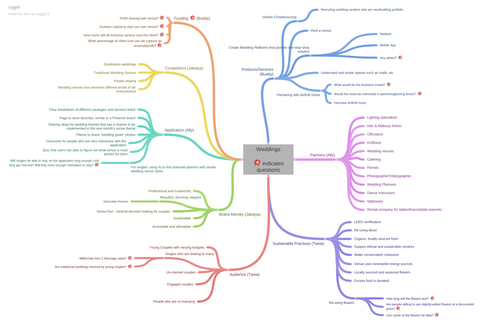
Initial Research & Bibliography
Using the mind map we created, we researched the different aspects of weddings to uncover some known unknowns. This allowed us to identify areas to conduct user research and interviews.
[INSERT IMAGES OF DOC HERE]
User Research and Insights
We interviewed 22 participants about the wedding industry ranging from married couples to wedding vendors to singles, and we gleaned some user insights about different potential features we should include in Wonderful Weddings.
High level insights gleaned:
- Too many decisions to make lead to wedding stress, but not enough recommendations can also leave people frustrated.
- Couples put importance on trustworthy wedding planners with good reviews and reliable resources.
- Couples want to address their budget and apply discounts where they can in order to save money on customizations that are less important to them.
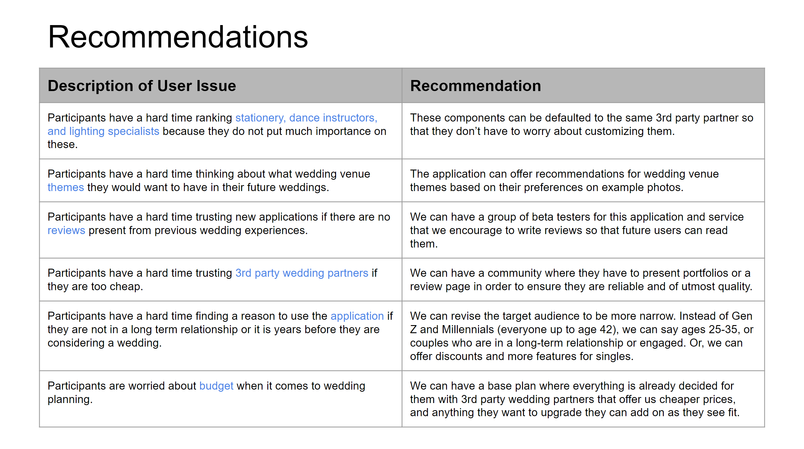
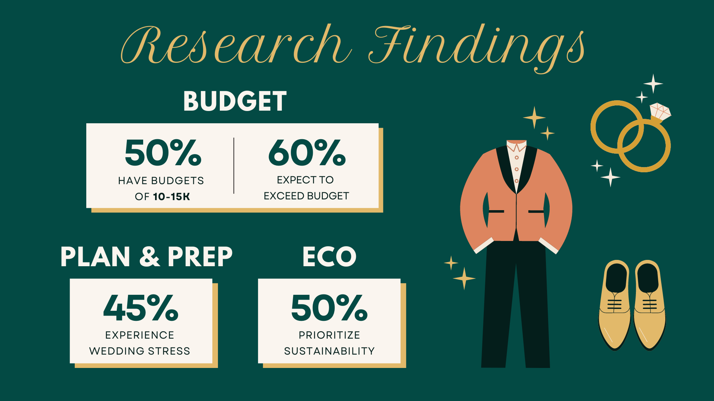
Features
In our first presentation, we wanted to show that it's feasible to have an under $10K wedding. We explained our target audience of budget-conscious couples and intimate ceremony seekers, and we showcased three of our main features.
- Wedding Tiers (stress-free feature): Having three starter packages to choose from lessens the choice paralysis many couples have to experience.
- Themes (stunning feature): By providing a theme quiz, couples can easily choose images that they gravitate towards most.
- Registry (sustainable feature): Instead of having the couple come up with items their guests can purchase for them, guests can donate directly to the wedding cost so that the couples can worry even less about their wedding expenses.
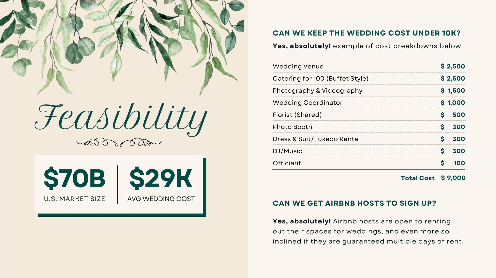
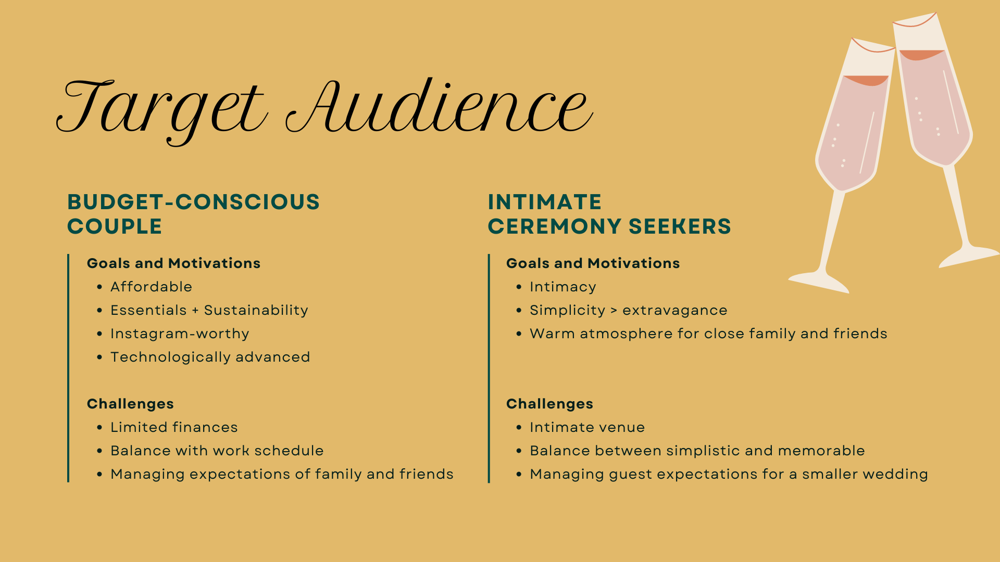
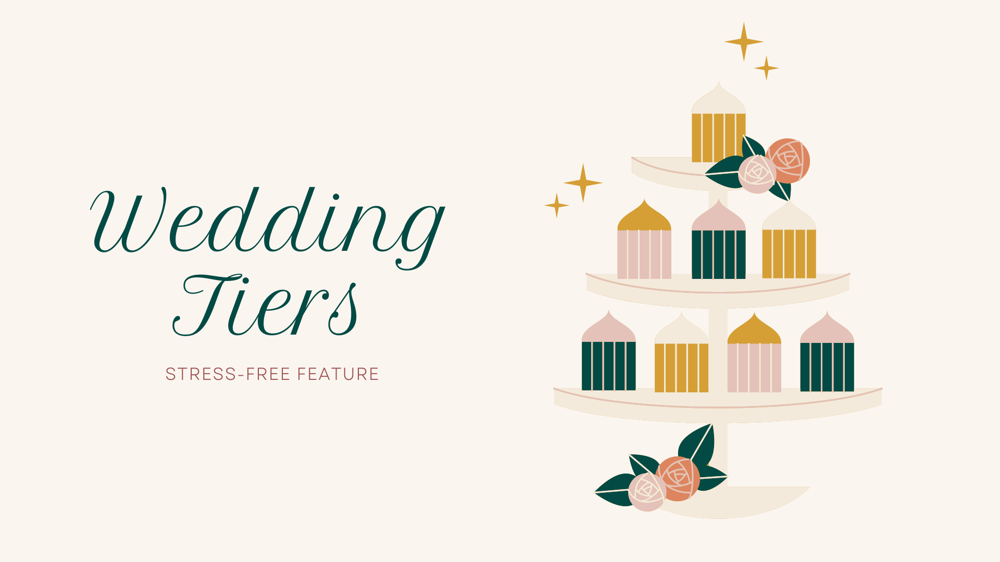
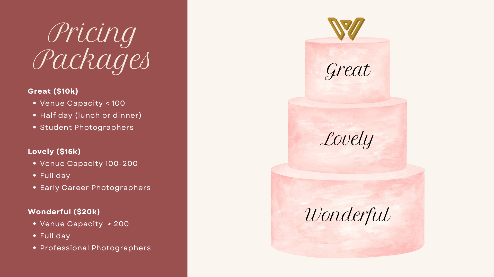
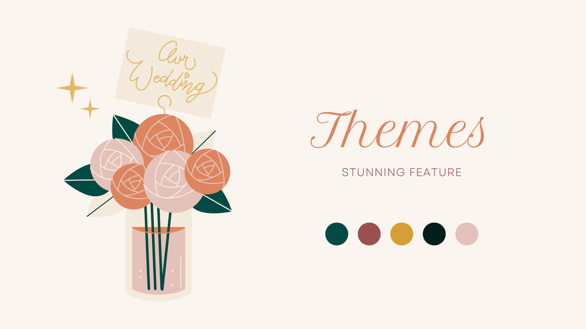
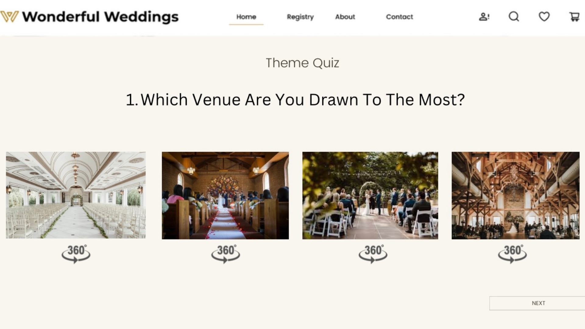
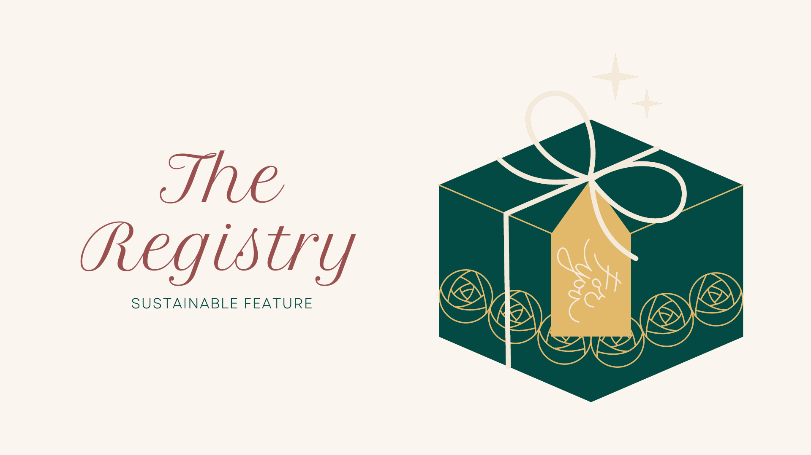

Gantt Chart
In order to organize our milestones and deliverables, we created a Gantt Chart. We mapped out the timelines, responsibilities, and internal team deadlines to meet the needs of this project during the production and testing phases.
[INSERT IMAGES OF GANTT CHART HERE?]
Round 2 Interview Insights and Findings
After creating the first draft of our website prototype, we interviewed 8 more participants to get their feedback. We gathered some high level insights and brainstormed recommendations to implement into our final prototype.
High level insights gleaned:
- Wonderful Weddings should highlight more prominently what sets us apart from other wedding companies.
- We should make the pricing more discreet on the cash registry page and format it in a way that seems less like a budget wedding.
- We need to increase trust that the wedding can indeed cost $10k.
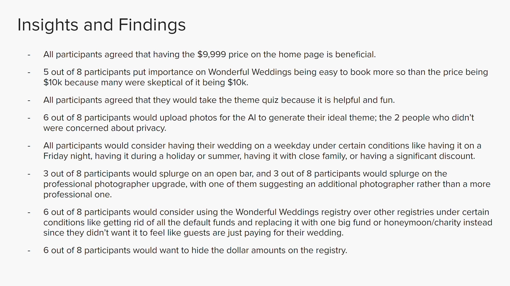
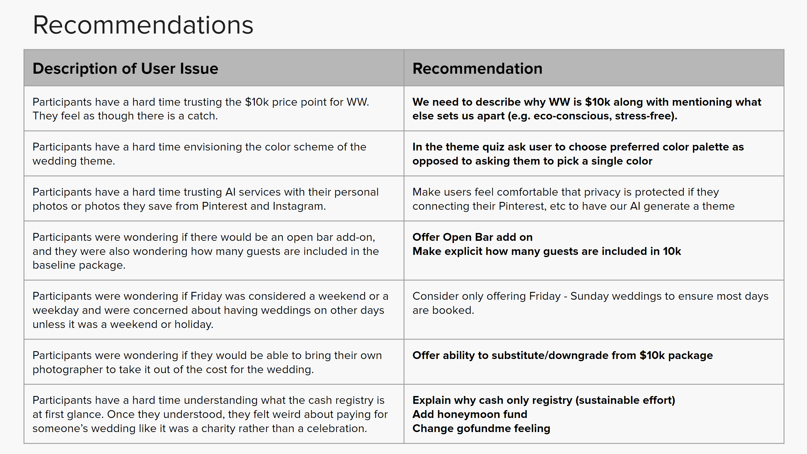
WIP
High-Fidelity Wireframes
Here are our final high-fidelity wireframes! Feel free to zoom in and out (ctrl+scroll) and drag the frame around to explore.
Prototype
Here's the final prototype! Feel free to click around and explore our website, Wonderful Weddings.
Reflection
I loved working on this project because the idea of having a wedding package delivered to you that is custom-tailored to your liking without having to lift a finger is an amazing concept. By going through multiple rounds of interviews, I was able to see the reactions of people from different backgrounds and revise the project to best fit people who would be interested.